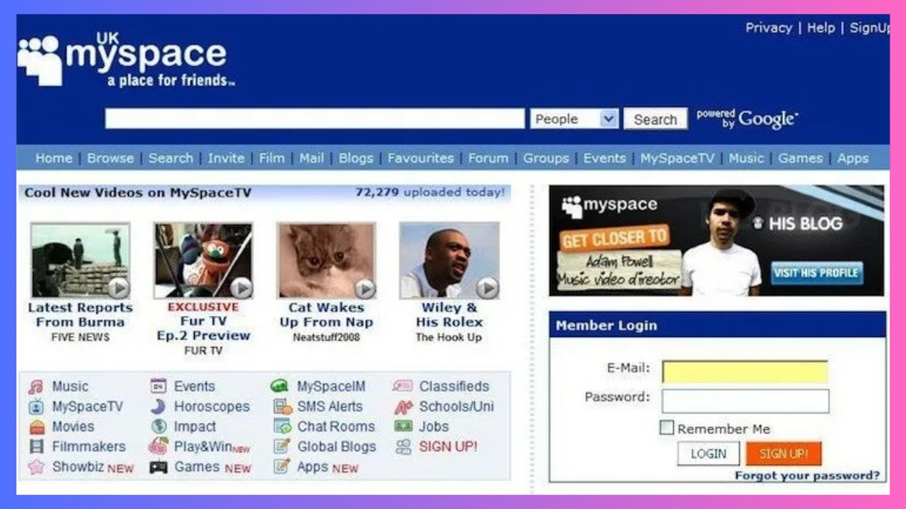

WEB 2.0
WEB 2.0 - это второе поколение интернета, которое начало формироваться примерно с 2003 года. Главное отличие от WEB 1.0 - интерактивность: пользователи перестали быть просто читателями и стали создателями контента.
Термин «WEB 2.0» популяризировал Тим О’Райли в 2004 году. Он описал новую модель, где ценность сайта создают сами пользователи, а платформа только предоставляет инструменты.
Что изменилось

В эпоху WEB 1.0 сайты были статичными: чтобы что-то изменить, нужно было редактировать HTML вручную. В WEB 2.0 появились технологии, которые позволили пользователям добавлять свой контент без знания программирования:
- Блоги - личные онлайн-дневники, где любой мог публиковать записи.
- Вики - сайты, которые редактируются сообща (например, Википедия).
- Социальные сети - платформы для общения и обмена контентом.
- Видеохостинги - YouTube, Vimeo и другие.
- Фотохостинги - Flickr, Instagram.
- Мессенджеры - ICQ, Skype, позже WhatsApp и Telegram.
Появление социальных сетей
В 2003 году появилась MySpace - первая массовая соцсеть, где пользователи могли настраивать свои профили и общаться. В 2004 году Марк Цукерберг запустил Facebook, который изначально был доступен только студентам Гарварда.
В 2006 году появился Twitter - платформа коротких сообщений до 140 символов. В том же году ВКонтакте был запущен Павлом Дуровым и быстро стал главной соцсетью в России и СНГ.
В 2005 году был запущен YouTube - платформа, где любой мог загрузить видео. Через год его купил Google за 1,65 млрд долларов - это была одна из крупнейших сделок в истории интернета на тот момент.
Технологии WEB 2.0
Технически WEB 2.0 стал возможен благодаря новым технологиям:
- AJAX - позволял обновлять часть страницы без перезагрузки.
- JavaScript-библиотеки (jQuery, позже React, Vue).
- RSS - подписка на обновления сайтов.
- API - программные интерфейсы для обмена данными между сервисами.
- CMS (WordPress, Joomla) - системы управления контентом, не требующие программирования.
Как это изменило интернет
Главный сдвиг: пользователь стал автором. Раньше контент создавали единицы, теперь - миллионы. Блоги, комментарии, лайки, репосты, мемы - всё это появилось в эпоху WEB 2.0. Интернет превратился из библиотеки в место общения и совместного творчества.
Но у эпохи есть и обратная сторона: фейковые новости, потеря приватности, зависимость от алгоритмов и монополия крупных платформ. Об этом - на странице «Современность».
Ключевые даты
- 1999 - запуск Blogger, начало эпохи блогов.
- 2001 - Википедия.
- 2003 - MySpace, LinkedIn.
- 2004 - Facebook, термин «WEB 2.0».
- 2005 - YouTube.
- 2006 - Twitter, ВКонтакте.